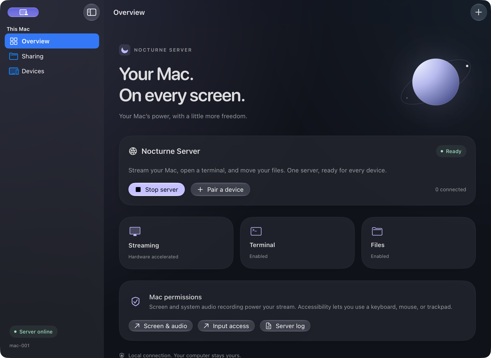

Always in your flow
Step away.
Pick right back up.
Open multiple terminal tabs. Leave commands running on your Mac. Reconnect to the same sessions when you’re ready.
Meet Nocturne
Your desktop, terminal, and files.
Beautifully at home on iPhone and iPad.
More than a remote desktop
Settle into the sofa. Move to the kitchen table.
The tools on your Mac can come along.
Always in your flow
Open multiple terminal tabs. Leave commands running on your Mac. Reconnect to the same sessions when you’re ready.
Keep your files close
Browse a shared folder on your Mac. Upload from your device, or download and share a file in a few taps.
Bring your favorites
Keyboard. Mouse. Trackpad. Controller.
The familiar controls, with room to make yourself comfortable.
Meet Nocturne Server
Streaming, device pairing, terminal access, and file sharing. All managed from one native app on your Mac.
Nocturne runs its streaming engine directly. Start your server, pair your device, and make yourself at home.
See how it works
Make yourself at home
Nocturne is free, open source, and in active development.
Download Nocturne Server and move it to Applications. Open the app and allow the permissions it needs to stream your screen.
Install the iOS app from source or an internal TestFlight invitation. Scan your Mac’s private pairing code to connect your iPhone or iPad.
Open your desktop. Bring up a terminal. Share a folder. Settle into the workspace that works for you.
Signed and notarized Mac downloads are available. iOS TestFlight is currently invitation-only.
Requires iOS 17+, macOS 14+, and an Apple Silicon Mac for the server.
Nocturne is a development preview. Physical accessory compatibility, audio, HDR, and long streaming sessions still need more testing. Mac controller emulation requires a compatible Virtual HID Broker driver.
Virtual-display and monitor-off work is experimental and has an unresolved black-screen issue. Keep those features disabled. Read the verification notes before testing.
No. Nocturne Server manages the Sunshine streaming executable directly inside one Mac application. There is no separate companion app or Sunshine web setup. The iPhone and iPad client uses the Moonlight streaming engine.
On your Mac. File access is limited to the folder you choose to share. Terminal and file sharing start disabled, and you decide when to turn them on. Terminal sessions survive mobile disconnects while the Mac server keeps running; stopping the server ends those sessions.
Made to feel like it belongs.
Open source. Yours to explore.